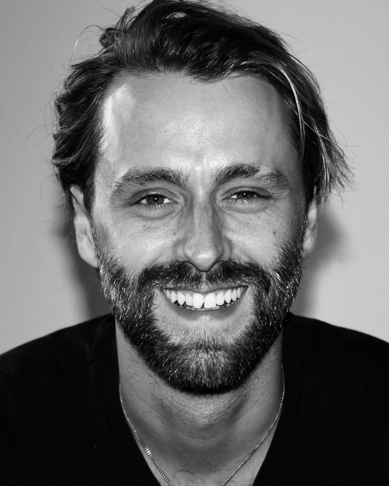
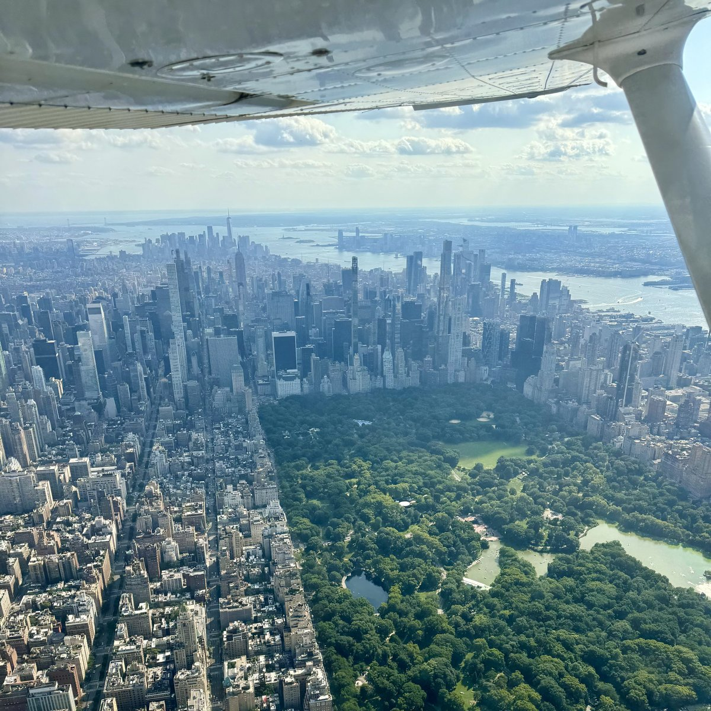
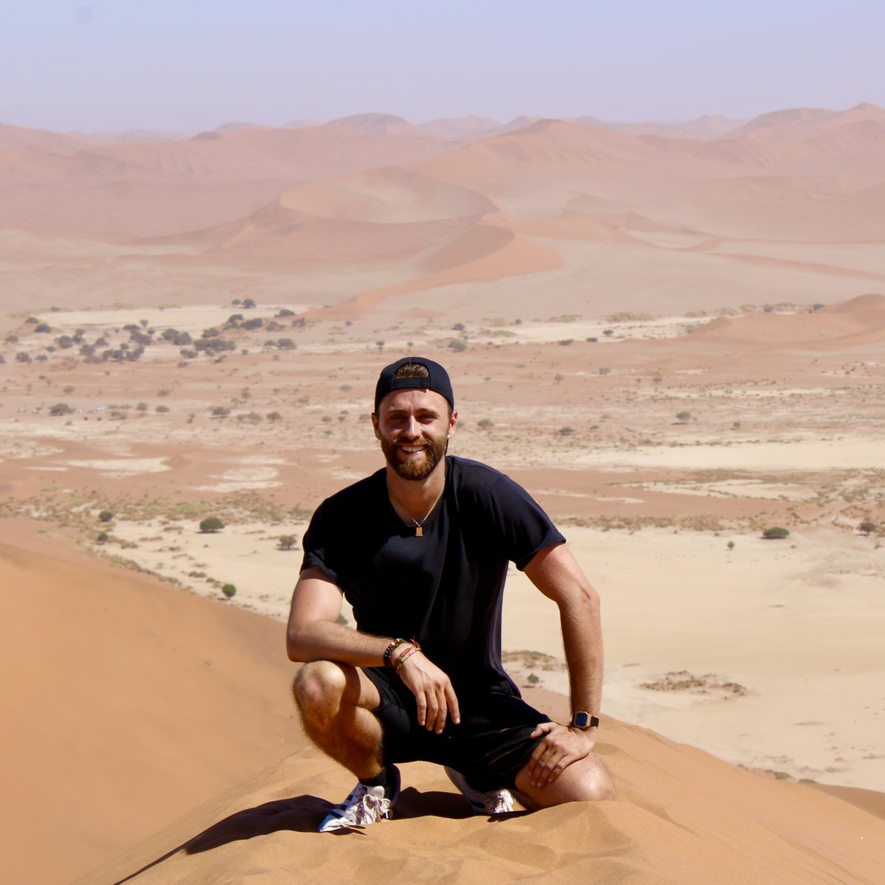

I build AI systems that have to work in the real world.
Co-founder & CTO at Sightline, where I built the ML from scratch and now lead engineering. Before that, ten years of applied machine learning. I care about the distance between a model that looks good on paper and one that works in production — and about what comes next in AI.

Now
Sightline is a VC-backed, AI-native supply chain operating system for restaurant chains. As technical co-founder I built the AI/ML vertical from scratch: deep learning forecasting models, an AI recommendation layer that turns predictions into decisions operators actually act on, and the data platform and infrastructure that run all of it in production.
Day to day I'm still an ML/AI engineer: designing model architectures, running training and evaluation, and shipping what works to production. As CTO I also lead the engineering team and scale the product. Sightline is where I'm applying these ideas today; the ideas are bigger than one vertical.
Work
-
The AI/ML vertical from zero: forecasting engine, recommendation layer, training and inference pipelines, data platform, cloud infrastructure. Then the engineering team to run it, and now the web app that restaurant chains use every day.
In production for paying enterprise customers.
-
My first venture: a "Strava for pilots." ML on flight and geospatial time series for airport and route recommendations, a global airport explorer built on 10M+ points of interest, and a fine-tuned LLM pilot assistant. Designed, built and shipped solo, models on-device via Core ML.
Live on the App Store.
Earlier
-
Five years of predictive modeling at scale for Fortune 500 clients: Bayesian marketing-mix models with MCMC inference, time series forecasting, and hundreds of gradient-boosted and neural models on billions of features. Led teams of up to nine data scientists.
Models behind $20M+ in client decisions.
-
Recommendation engine for in-flight entertainment, built from passenger viewing history to shape airline media portfolios.
What I believe
- AI is the most powerful technology we have ever built. The only way it ends up serving people rather than the other way around is if everyone is in the conversation — building it, using it, deciding what it is for, and setting its guardrails.
- The tools change every year. Math doesn't. Every model I've shipped, from Bayesian regression to transformers, came down to the same few ideas: distributions, uncertainty, optimization. Learn the tools, but invest in the math — it's the only part that compounds.
Writing
-
Placeholder — post title
Placeholder — one-line summary.
-
Placeholder — post title
Placeholder — one-line summary.
-
Placeholder — post title
Placeholder — one-line summary.
Long-form, infrequent. Notes on building ML that works outside the lab.
About
Paris → California → New York
I grew up in a small town near Paris with one ambition: move to America and build a life from scratch. I earned two Bachelor's degrees at Sorbonne Université, one in Mathematics and one in Computer Science, then moved to California for a Master's in Statistics. I've been in New York since 2019.
Outside of work, I'm a licensed pilot, avid off-the-beaten-path traveler and (unlicensed) French cook at home.
English, French, Spanish.


Get in touch
Open to conversations about applied ML, AI research, and what the next generation of AI systems should look like.